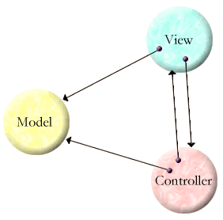

| |
TermL Embeddings |
||||||
In order to be suitable for use as a universal language for representing trees of symbols, TermL must be able to naturally represent the major other widespread universal trees-of-symbol languages, such as XML, S-Expressions, and tree-oriented object serialization.
The embedding of XML into TermL owes a tremendous debt to Oleg Kiselyov's SXML.
The style shown below for serializing object graphs into TermL is inspired by Tyler Close's XML-based object serialization.
Embedding XML
XML Attributes and Elements
Like TermL terms, an XML Element contains a sequence of child Elements, so these concepts can map directly. An XML Element also contains a set, not a sequence, of name-value pairs, or attributes. An example valid in HTML and XHTML (HTML4 encoded in XML):
<font size="3" color="#FF0000">foo<b>bar</b>baz</font>
This can be written in TermL as follows:
font({size: "3", color: "#FF0000"},
"foo", b("bar"), "baz")
The curly brackets indicate that order should not be taken as significant among the terms within the curly brackets. The ':' shorthand is used for attributes to emphasize that the attribute isn't of self-contained meaning, but is rather an encoding of properties of the enclosing Element.
The above is syntactic shorthand for:
font(.bag.(.attr.(size("3")), .attr.(color("#FF0000"))),
"foo", b("bar"), "baz")
Since the .bag. functor cannot correspond to any XML-QName, an XML-oriented interpreter of this term-tree knows that this first argument is to be interpreted as holding attributes. If an Element has no attributes, this optional first argument may be omitted. If an Element has no children, such as the following XHTML,
<img alt="ELM architecture" src="eLanguageMachine.gif" />
then the parentheses which would enclose only the attributes can be left out:
img{alt: "ELM architecture", src: "eLanguageMachine.gif"}
which is shorthand for
img(.bag.(.attr.(alt("ELM architecture")), .attr.(src("eLanguageMachine.gif"))))
XML Namespaces
A tag can be used to represent both unresolved and resolved XML-QNames. An unresolved XML-QName is written as it is in XML -- as a Prefix, a separator, and a LocalPart. However, in TermL the separator is '::' instead of ':'. As explained by XML Namespaces, the semantics of an unresolved XML-QName is represented by the corresponding resolved XML-QName. An XML-QName is resolved by substituting for the Prefix the URI which is the namespace name found by evaluating this Prefix in the current namespace scope. An example from XML-NS:
<?xml version="1.0"?>
<!-- both namespace prefixes are available throughout -->
<bk:book xmlns:bk='urn:loc.gov:books'
xmlns:isbn='urn:ISBN:0-395-36341-6'>
<bk:title>Cheaper by the Dozen</bk:title>
<isbn:number>1568491379</isbn:number>
</bk:book>
Written manually in TermL without resolving XML-QNames:
xml(.pi.("version", "1.0"),
.comment.("both namespace prefixes are available throughout"),
.letns.({bk: <urn:loc.gov:books>,
isbn: <urn:ISBN:0-395-36341-6>},
bk::book(bk::title: "Cheaper by the Dozen",
isbn::number: 1568491379)))
As seen above, we follow SXML's example and represent additional XML node types, like processing instructions or comments, by using special tags as functors, like .pi. or .comment..
An automated translation would need some kind of schema or type information in order to translate the isbn number to 1568491379 rather than "1568491379".
Despite the syntax of XML, modern XML infosets (XPath and XML-Infoset) do not treat namespace definitions as attributes. Rather, the set of namespace definitions in scope at an Element is yet another first-class part of the Element, in addition to the Element's tag, attributes, and child Elements. Namespace defintions are lexically scoped and shadowed in the conventional manner, though the syntax of XML obscures this as well -- in the XML example above, the "bk" in the first "bk:book" is resolved in the scope of the "bk" defintion that occurs textually to its right. To embedding XML in TermL, we emphasize the conventional lexical semantics of these definitions by introducing a separate .letns. construct, similar to the Scheme let.
Transforming the above term-tree through a (yet to be written) .letns. resolver tool, we'd get:
xml(.pi.("version", "1.0"),
.comment.("both namespace prefixes are available throughout"),
<urn:loc.gov:books>::book(<urn:loc.gov:books>::title: "Cheaper by the Dozen",
<urn:ISBN:0-395-36341-6>::number: 1568491379))
The first form is easier for humans to read and (especially) write. The second is easier for programs to manipulate.
Note that the latter does not retain all the information defined to be significant by modern XML infosets. These require that the Prefix and redundant namespace definitions be retained. Therefore, it is an application-specific decision to employ the resolver tool. Most applications do not care about the information that would be thrown away by such a tool.
Speculative: With this embedding of XML into TermL, an XML DTD or a Relax-NG Schema can be translated into a TermL Schema (yet to be defined), such that an XML document D1 valid according to Schema S1 would translate to a TermL term-tree D2 valid according to translated Schema S2.
*** We have yet to specify the embedding of the definition and use of the XML default namespace.
Embedding JSON in TermL
TermL is now a superset of JSON, and so all of JSON embeds trivially. As of this writing, TermL parsed all examples on the JSON examples page, and detected that the third example was missing a close-curly.
Embedding S-Expressions in TermL
Readers already familiar with S-Expressions may be puzzled at this point. Why is any embedding needed at all? Aren't term-trees and S-Expressions equivalent except for syntax? Surprisingly, the answer is no. There are four differences altogether, of which the first is syntax.
| S-Expressions | TermL | Differences from S-Expressions |
|---|---|---|
(f a b) |
f(a, b) |
The open paren is to the right of the functor, and the arguments are separated by commas |
((a b) (c d) |
can't |
The functor must be atomic. |
f != (f) |
f == f() |
Leaves are just childless nodes. (This statement makes use of the shorthand introduced earlier.) |
(a . rest) |
can't |
All lists must be proper lists |
By this table, it seems that S-Expressions are more expressive than term-trees. Indeed, this is the case, in the sense that an embedding of TermL into S-Expressions is more trivial than the reverse. To embed S-Expressions into TermL we translate lists into square-bracketed lists, which is really a shorthand for use of the .tuple. functor.
| S-Expressions | TermL Embedding |
|---|---|
(f a b) |
[f, a, b] |
((a b) (c d) |
[[a, b], [c, d]] |
f != (f) |
f != [f] |
(a . rest) |
.cons.(a, rest) |
This takes care of all cases but the dotted pair, for which we introduce the .cons. functor. By this embedding, the S-Expression
(lambda (a b) (plus a b))
translates to
[lambda, [a, b], [plus, a, b]]
However, this embedding is besides the point. Most actual uses of S-Expressions can be described by a Schema of some sort. For example, in the Scheme language, if the first member of a list is one of a distinguished set of symbols, then the list is interpreted as a primitive special form. Otherwise, it is interpreted as a function call. A more useful embedding of Scheme into TermL would be based on recognizing the "Schema" describing how Scheme is represented in S-Expressions. Using such a Schema, and taking the above S-Expression to be a Scheme program, we may instead translate it as:
lambda(params(a, b), apply(plus, a, b))
or
lambda(params(var("a"), var("b")), apply(var("plus"), var("a"), var("b")))
Although the first is less readable than the original, it is still sufficiently readable for human manipulation. Unfortunately, only the second is in the form of a proper AST of the Scheme program that could be validated against a Scheme Schema. Why? A Schema should use a finite number of tags to describe a finite number of functor kinds. Only the latter form uses tags only to distinguish AST node types. Because of the inherent tradeoff here, the TermL Schema language should include an optional default-tag clause, specifying the translation of unrecognized leaf tags into a normalized form. (The kind of translation implied above would not work for a non-leaf tag, but then again, a Schema-based translation could not produce an unrecognized non-leaf tag.)
*** Should investigate how the explicit for relates to Brian Smith's 2-Lisp.
Serializing Object Graphs
*** We are now planning to serialize object graphs using Data-E instead. Nevertheless, the following hypothetical serialization style is interesting.
XML has the four main features needed for a human manipulable upgradeable embedding of object graphs into a tree-oriented textual notation:
-
Typed nodes. XML Elements are "typed" by the Element tag name.
-
An unordered set of name-value pairs. A programmer's view of an object's state is a mapping from instance variable names to the values of those instance variables. The order of the instance variables is not part of the semantics of the program, is not memorable, and so should not be relied on for the textual encoding. By using an order-independent name-based encoding, serialized data is more likely to remain valid for latter versions of the object's definition. XML attributes have exactly these properties.
-
Recursive data definition. Just as object A can refer to object B, which can refer to object C, to any depth, so a serialization format should be based on nodes that can refer to other nodes and so on to any depth. XML Elements are the primary nodes of an XML tree, and they can indeed be recursively embedded to any depth.
-
Non-local references. In order to embed a tree in a graph, some form of non-local reference is needed, so that the same subtree may be referred to from multiple places (ie, have multiple parents). XML provides for this with ID and IDREF type attributes.
Unfortunately, XML is defined so that the virtues of #2 and #3 cannot be used together. Since #3 is a requirement, the virtues of #2 have to be independently recreated as an encoding in terms of Elements. For example, many XML-based serialization formats use Element tags for instance variable names, as in
<org.erights.example.Point>
<x>33</x>
<y>44</y>
</org.erights.example.Point>
In TermL, we would instead write:
org.erights.example.Point{x: 33,
y: 44}
The correspondence between these examples closely follows that of the XML-to-TermL embedding presented previously. However, by the logic of that previous embedding, we are treating the set of instance variables as attributes. Since TermL has no primitive notion of attributes, the value of such an "attribute" can be any term, so we naturally combine virtues #2 and #3 from the above list.
Non-local References

Starting at View, the depicted object graph may be represented as
.id.(1, View{model: .id.(2, Model{...}),
contrl: Controller{model: .idref.(2),
view: .idref.(1)}})
We introduce the special functor of two arguments .id., which, like an XML ID-typed attribute, causes the second argument (the value) to be identified by the first argument (the index). The index should be an integer, and be unique among all indexes in this serialization. The scope of the index extends from its defining occurrence, left-to-right for the rest of the term-tree. We also introduce the special functor .idref., whose one argument is an in-scope index, that decodes into another reference to the value already associated with that index.
By contrast, an XML ID-typed attribute's scope is the entire document, enabling forward as well as backwards references. For ease of unserializing, the embedding described here uses the more restrictive left-to-right scope that allows only backwards references.
Previously, our hypothetical .letns. resolver tool above could be used for TermL representations other than the XML embedding, so long as they follow the .letns. convention. Likewise, a converter between TermL trees and TermL graphs could be used for any TermL representations that follow the .id. and .idref. conventions, whether or not these graphs are ultimately an encoding of objects. For such TermL representations, Schema validations should be applied to the graph form rather than the tree form.
To serialize a typed object graph (eg, for Java) into a validating TermL representation, for each type of object serialized, the corresponding representation type is added to the schema as the constraints for that type tag. The resulting schema can only be used to validate a TermL graph. This is a perfect example where tree-valiadtion would be completely useless.
Primitive Types
Primitive integer, float64, character, and string data are just encoded with the corresponding literals. A ConstList is encoded using the square bracket shorthand, or the .tuple. tag when written out in longhand.
Unless stated otherwise, all text on this page which is either unattributed or by Mark S. Miller is hereby placed in the public domain.
| |
|
report bug (including invalid html)
|
||||||||